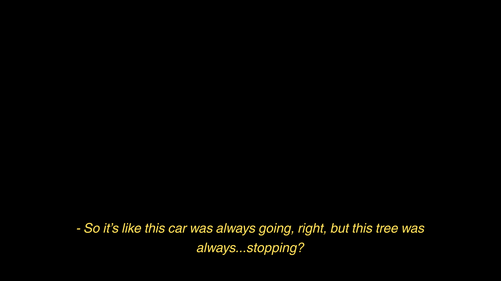
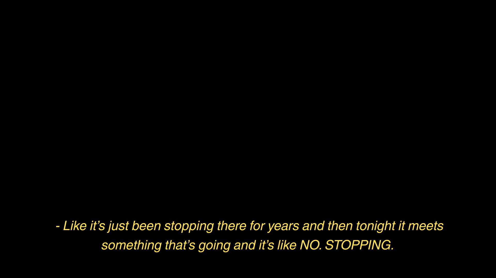
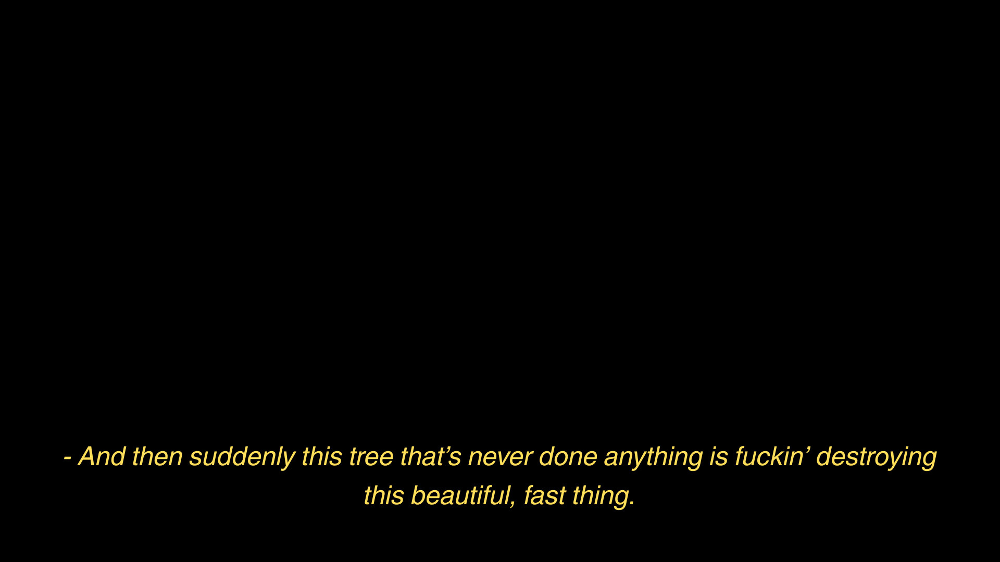
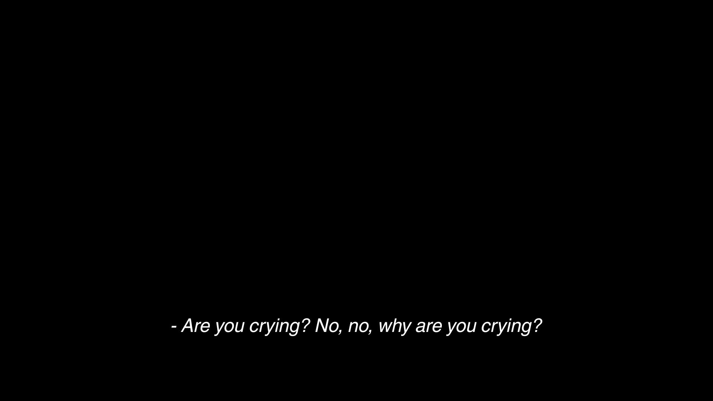
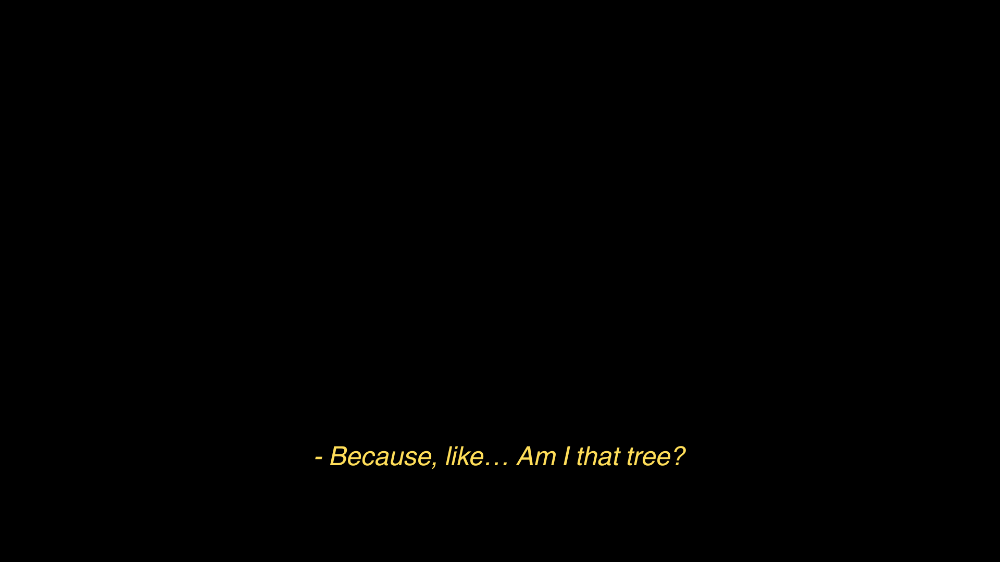
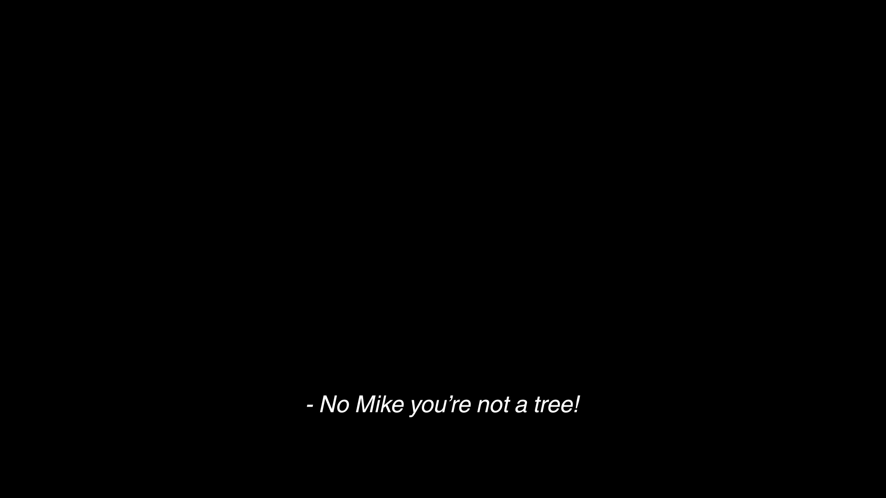
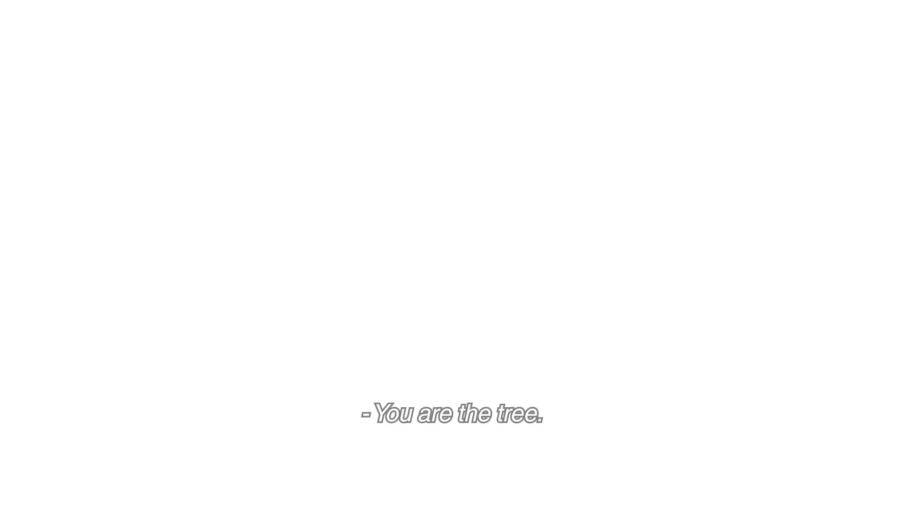
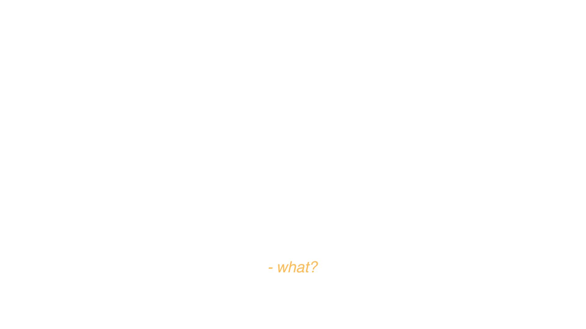
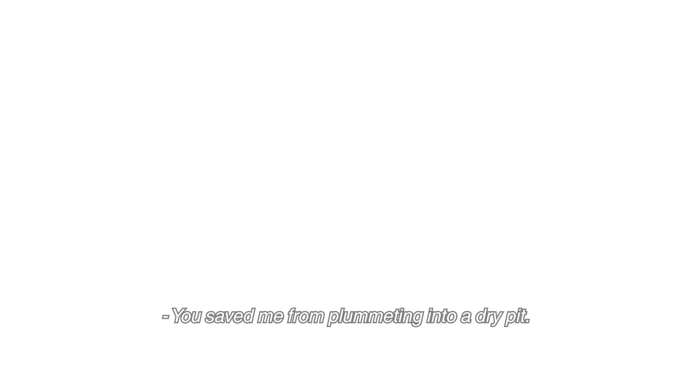

디텐션이다, 달리-앤 로페즈! 교장의 수 차례 경고에도 불구하고 달리-앤이 자신의 온갖 파스텔 컬러 퍼코트를 고수한 것이 그 사유였다. 달리-앤의 고집에는 제나름 이유가 있었다. 보드라운 퍼코트는 달리-앤이 처음으로 갖게 된 좋은 옷이었고, 그것을 창고에 처박아 두고 싶지 않았다. 그는 앳되고 예쁘지만 나이대 특유의 생기가 메말라 가고 있었다. 그도 자신이 말라 죽는 사막에서 물웅덩이를 찾아야 한다는 사실을 알았다. 연명을 위해서는 무엇이든 할 수 있었다. 세포라에서 하이라이트를 훔쳐 입술산 위를 밝히고, 낡은 패션 잡지가 너덜해져 떨어질 때까지 들여다 보았다. 형편없고 어설픈 자아 찾기의 결과는 처참한 디텐션이었다. 시청각실 창고를 정리하라는 교장의 명령에 따라 달리-앤은 말대꾸 한 마디 없이 장갑을 끼고 시청각실로 향했다. 그곳에서 달리-앤은 불청객을 맞닥트렸다. 시청각실 한가운데, 앞좌석에 겅중한 두 다리를 올린 소년. 달리-앤은 그의 이름을 알았다. 두 학년 위의 에이브리 언더우드. 달리-앤은 심드렁한 얼굴로 그 옆 버건디색 좌석에 앉았다. 대화 한 마디 제대로 해본 적 없는 사이였으나, 언제부터인지 몰라도 달리-앤은 불청객 축에 끼는 데 익숙했다. 달리-앤은 소년을 둘러싼 소문을 떠올렸다. 학교 벽에 낙서를 하다 걸려 정학을 당했고, 그의 집 앞을 지나가면 형편없는 바이올린 연주가 들렸다. 그 중 가장 자극적인 소문은 이것이었다.
"너 정말 할머니와 키스했어?"
"그분은 레이디야."
그렇구나. 달리가 고개를 끄덕였다. 그 외에 할 말이 없었다. 지하에 반쯤 잠긴 데다 한 번도 의자 시트를 빨지 않아 쿰쿰한 냄새를 품은 시청각실은 이제 둘을 위한 영화관이 되었다. 어딘가 허술하여 사랑스러운 B급 영화만을 상영하는 영화관이다. 크리스틴 스튜어트가 끝내주게 아름다운 얼굴로 주인공을 바라보고 있었다. 영화 시작도, 인물도 모두 알지 못하는 상태로 달리는 영화에 몰입했다.






화면 속 남자가 울고 있었다. 매사 뜻대로 되지 않는 삶을 살아온 이의 스스로를 향한 불확실과 의심. 동시에 달리 앤의 마음 속에는 새로운 발견이 싹 튼다. 달리-앤은 완벽한 삼각형 모양의 나초를 들어올려 그것이 생물이라도 되는 듯 바라보았다.
"“나초가 안 줄어.”
당연하다는 듯 에이브리가 웃는다. 달리 앤이 가장 좋아하는, 파블로프의 종처럼 달리 앤을 기대로 벅차게 하는 그 웃음이다. 잘 알지도 못하는 사람의 웃음이 세상에서 가장 좋아하는 것 중 하나라는 사실을 아는 것은 이상한 일이었다. 달리-앤의 마음이 발갛게 물들었다. 언더우드가 없는 학교 생활은 끔찍하게 지루했다. 사랑스러운 오아시스, 손가락 사이로 산소처럼 흘러내리던 생기가 돌아오고 있었다. 달리-앤은 자신도 모르게 중얼거렸다.
“이게 나만 꾸는 꿈이면 어쩌지. 너도 같은 꿈을 꾸고 있어야 하는데.”
달리-앤은 눈을 감고 이미 기한이 지난 작문 숙제의 서두를 어떻게 해야 할지에 대해 떠올렸다. 미세스 빅은 짧고 임팩트 있는 문장으로 글을 시작하는 걸 좋아한다. 미국 역사에 대단한 자부심을 갖고 있으니, 미국, 빌어먹을 CPA의 나라에 대한 짧은 모욕과 함께 곧장 변주를 주어 강렬한 인상을 남기는 게 좋겠다……. 깨지 않을 꿈인 것처럼 현실을 곱씹었다. 급식으로 나온 형편없는 스파게티, 락커 앞에서 키스를 나누는 청소년 커플들, 푼수 같은 면이 있고 남 얘기를 좋아하지만 심성 착한 베스트 프렌드. 그리고 결국은 둘만이 시청각실에 남은 이 운명까지. 에이브리는 앞좌석에 걸쳐 놓았던 다리를 내리고 달리-앤을 바라보았다.
“애나 앤, 내 사랑스러운 먹보 천사.”
언더우드가 애나 앤의 입에 나초를 밀어 넣었다. 달리의 뺨이 불룩해졌고, 나초 봉지 속 나초가 멈추지 않는 초침처럼 넘치기 시작했다. 머잖아 꿈에서 깰 것이 분명했음에도 에이브리와 그의 애나 앤은 초조하지 않았다. 저 밖에서 언더우드가 기다리고 있었다. 언제나, 어디서든. 달리-앤이 절벽에서 뛰어 내려도 언더우드는 파도에 발목을 담근 채 그녀를 받아줄 게 분명했다.



달리 앤은 뿌리로 엉킨 차량과 나무 한 그루를 떠올린다. 그들은 멈추지 않고, 뜨거운 태양을 향해 끝없이 웃자랐다. 그는 삶의 모든 것을 구체적이고 사실적으로 만들었다. 시동이며, 기름이고, 또 나무였다. 달리-앤은 질주하는 차에서 맞는 바람이 얼마나 기분 좋은지 몰랐을 평온한 날을 떠올렸다. 평생 두려움도, 배부름도 모르고…… 퍼코트가 떨어져 팔꿈치에 걸렸다. 불량하게 흘러내리는 자세에 금발 머리도 함께 굽이쳤다. 달리-앤은 코끝에 걸린 선글라스를 고쳐 썼다.
“달리 앤 언더우드Underwood, 에이브리.”
“내가 꿈에서 깨면 꼭 그렇게 말해줘야 해…….”